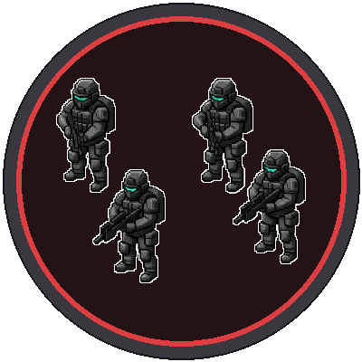
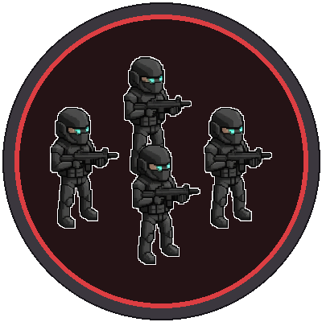
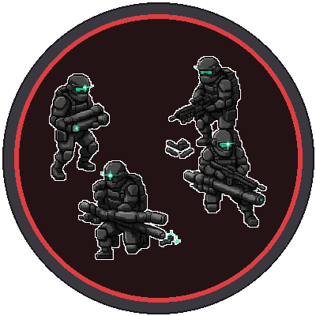
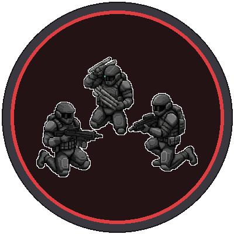
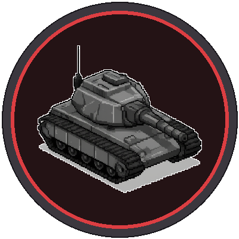
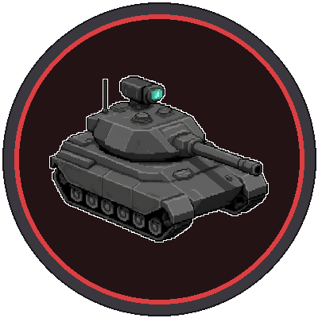
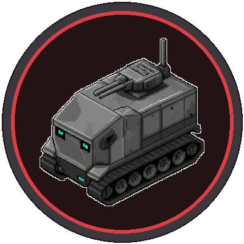
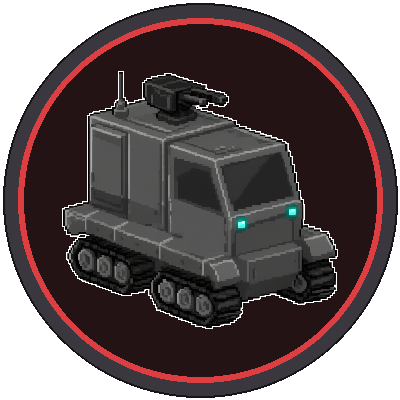

VSAF token previews
Two candidates per unit. Tap an image for its full-size PNG. Reply with your picks, for example “rifle A, anti-armor B, tank B, APC A”.
Dark-red backgrounds and red rims match the existing enemy tokens. These are previews only; nothing has been installed in Foundry.
Rifle squad




Anti-armor team
Candidate weapons read less clearly as launchers than intended. These may need another pass.




Tank




APC




Generated locally with Qwen-Image-Edit-2509 Q4_K_M, using an existing Foundry Assault token as style reference. 20 steps, CFG 2.5, shift 3, Euler/simple. Original reference artist: Retrograde Minis. Generated candidates are style studies, not official Lancer or Retrograde Minis assets.